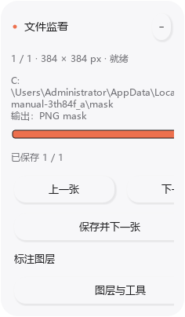
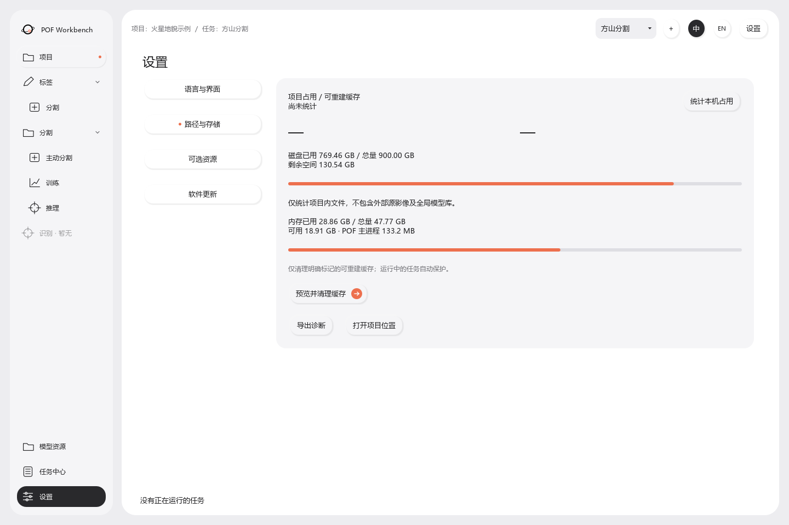

PAI · Southern University of Science and Technology

POF Workbench User Manual
Image annotation, segmentation training and batch inference
POF Workbench is developed by the Planetary and Artificial Intelligence Laboratory (PAI) at Southern University of Science and Technology. It brings manual annotation, active learning, model training and batch inference into one desktop application for planetary remote-sensing imagery. This manual describes data preparation, everyday operations and result checks for research and image-processing work.
Contents
- 1. Software overview and workflows
- 2. Installation, startup and first configuration
- 3. Projects and tasks
- 4. Import, pairing and label normalization
- 5. Independent annotation: masks and SHP
- 6. Drawing, editing, erasing and shortcuts
- 7. Active learning
- 8. Model training
- 9. Model resources
- 10. Batch inference and outputs
- 11. DEM, relative terrain and multiscale windows
- 12. Task center and diagnostics
- 13. Settings, resources and updates
- 14. Saving, backup and migration
- 15. Troubleshooting
1. Software overview and workflows
1.1 Scope and terminology
A project groups related research. A task identifies one target, such as mesas or craters, and keeps its own data, labels, models and active-learning rounds. A project may contain multiple tasks. A run in the Task center is an individual operation, such as one training run or an inference batch; it is not another recognition task.
The current workflow performs binary semantic segmentation: each pixel is target or background. It does not assign a separate instance ID to every object. An image is the original TIFF or ordinary picture. A mask is its pixel-aligned label, normally white for target and black for background.
| Starting material | Workflow |
|---|---|
| Images to annotate manually | Independent annotation; no project or model required |
| Images and completed labels | Create a task, check pairs, train and validate |
| Few labels or no target-specific model | Active learning: review initial regions, train, then review recommendations |
| A trained segmentation model | Batch inference, followed by optional manual correction |
POFBase is a training initialization model. It is not a trained detector for every landform. A task-specific model learns from labels for your target.
1.2 End-to-end operation
For supervised work, follow project → task → data and label checks → training → validation → inference. For active learning, follow unlabelled images → recommended regions → manual review → submitted labels → training → evaluation → the next round. Validation measures performance on reserved data; test data is for a final independent check.
2. Installation, startup and first configuration
2.1 Installer and portable edition
Use the Windows installer, choose an installation location and complete setup. A short local path such as D:\Apps\POF is convenient. For the portable edition, extract the entire ZIP to a writable folder. Keep the executable, worker program and _internal folder together; copying the executable alone is insufficient.
2.2 Initial setup
- Launch POF and wait for workspace preparation to finish.
- The default language is English. Use 中 or EN at the top to switch; the choice is remembered.
- In Settings → Language and interface, check the default project location and appearance. System appearance is the default.
- For annotation alone, continue without downloading GPU libraries or MarsScope.
- For accelerated training or inference, open Settings → Optional resources and check GPU support.
GPU libraries accelerate computation. MarsScope provides optional semantic assistance for Mars candidate-region search. They serve different purposes and are not both required to open the application.
2.3 Navigation and feedback
| Area | Purpose |
|---|---|
| Projects | Create or open projects, enter tasks and manage their data |
| Labels → Segmentation | Independent annotation without a model |
| Segmentation | Active learning, training and inference |
| Models | Inspect capabilities and metrics; import, export or delete models |
| Task center | Run progress, history, errors and recovery actions |
| Settings | Language, appearance, devices, storage, resources and updates |
Task-dependent segmentation entries remain disabled until you enter a task. Independent annotation, Models and Settings remain accessible. Recognition is a reserved, unavailable entry. Within a task, Projects returns to that task's data page; it does not exit the task. Use the project task list or Switch project to change scope.
Long operations report stages, progress and recent activity. Before a total is known, an animated indicator does not represent a precise percentage. If a button is disabled, check the adjacent reason: missing task, unchecked data, unavailable model, saving or a running operation.

3. Projects and tasks
3.1 Create a project
- Select New project on the workbench.
- Enter a project name and save location.
- Enter the recognition target (task), such as Mesa or Crater.
- Select the relevant planet; enable optional MarsScope assistance when appropriate.
- Create the project and follow the task/data entry prompts.
A project description is not required. Resolve a name conflict by choosing a different name or opening the existing project. A useful structure is one project per regional study, with separate tasks for different targets. Continue successive improvements of the same target in the same task.
3.2 Multiple tasks and switching
Use New task in the project's task list. Enter the target and choose active learning, training or inference as the starting route. Different tasks keep separate labels, models and rounds even when they belong to the same project.
Opening a project presents its task list rather than silently entering the first task. Enter the task you want, or change it with the top task selector. Check the project/task breadcrumb before working. Exit project returns to the workbench. Project and task information can be edited from their respective pages; changing a name does not relocate files.
Switching scope or replacing data may be restricted during training, checks, saving or inference. Wait or use the safe-stop action first. Projects with labels can generate a thumbnail from a labelled target. Registering an image directory normally references its original location rather than copying every image into the project.

4. Import, pairing and label normalization
4.1 Data categories
| Category | Contents |
|---|---|
| Images | Originals corresponding to labels, or inference inputs |
| Annotations | Pixel-aligned masks or aligned polygon Shapefiles for supervised training |
| Unlabelled | Images awaiting annotation for a new active-learning session |
| Confirmed background | Images manually checked to contain no target for this task |
| DEM | Optional elevation raster covering the relevant area |
A missing mask does not mean background. Put unchecked images in Unlabelled, not Confirmed background.
4.2 File pairing
image/ mask/ MESA_001.tif MESA_001.png MESA_002.tif MESA_002.shp
Use the same base name for the image and label. A mask must have the same pixel width and height as its original. PNG does not need to contain the TIFF projection, but its pixels must align exactly; do not stretch a label arbitrarily to make dimensions match. Keep Shapefile companion files together. Avoid ambiguous image names such as A.tif and A.jpg in the same pairing scope.
4.3 Check data and handle changes
Select sources and run Check data. The application builds a file list, pairs labels and checks dimensions and encoding. Review matched pairs, missing labels, size mismatches, duplicate names and extra masks. Extra labels without originals can be reported and skipped while valid pairs remain usable. No usable pairs or unresolved critical issues still prevent training.
Mask and SHP labels may coexist. When both exist for one image, the current default annotation output format determines priority; otherwise the available label is used. They are not merged automatically. SHP polygons are aligned to the original raster and cached as training masks under the task's data/shp_masks directory. Original vectors remain unchanged. Recheck data after changing the preferred format or saving new labels.
Large or network directories can take time to enumerate. Follow the stage, discovered count and recent filename rather than repeatedly launching checks. Directory monitoring detects changes in names, size and modification time at intervals:
- Added files: an existing run keeps its original batch. Recheck after the run to include new files.
- Replaced/deleted files or disconnected storage: affected operations request a safe stop; saved outputs remain.
- During annotation: preserve or discard current edits explicitly before refreshing the file list.
- Externally changed labels: a save conflict is reported instead of silently overwriting the external file. Save to another output directory if necessary, then compare.
4.4 Generate 0/255 copies
- Choose images and labels and complete the check.
- Select Generate 0/255 label copies and follow conversion progress.
- Check the completion path and updated label directory.
- Recheck data before training.
Copies normally go to the task's data/converted_masks or a numbered alternative; the completion message is authoritative. Originals remain. Common 0/1, 0/255, grayscale-edge, palette and single-color RGB/RGBA masks are supported. Multi-class labels require a target-class decision. A screenshot of colored outlines is not a valid mask merely because it is an image.

5. Independent annotation: masks and SHP
5.1 Create labels
Open Independent annotation from the workbench or Labels → Segmentation. No project or model is required.
- Open an image or image directory.
- Select an output folder, preferably separate from the originals.
- Mark targets with polygons, a brush or lasso; correct mistakes with erasing tools.
- Press Ctrl+S, or use Save and next.
- Wait for save confirmation before disconnecting storage or closing the process.
Common TIFF, PNG, JPEG, BMP and WebP inputs are supported, subject to the file's actual encoding and integrity. Default output is an original-size grayscale PNG: target = 255, background = 0. The editor's green overlay is a display color, not the saved PNG color.
5.2 Output format and Shapefiles
Choose PNG mask or SHP in Settings → Language and interface → Default annotation output, then apply. The canvas Layers and tools → Output format entry can also change and remember this choice. Saving writes the chosen format rather than duplicating both by default.
For georeferenced TIFFs, SHP output uses the original coordinate system. Ordinary pictures produce pixel-coordinate SHP; retain its .pof.json alignment metadata. Keep .shp, .shx, .dbf, .prj when present, and other sidecars together. Do not treat pixel-coordinate vectors as mapped geographic coordinates.
5.3 Edit existing labels and mix formats
- Open the original image(s).
- Point the output folder to the existing labels.
- Check the automatically loaded same-name mask or SHP, or use Layers and tools → Read labels to choose a file.
- Edit and save using the current output format.
You may read SHP and save PNG, or the reverse. A directory can contain A.png for A.tif and B.shp for B.tif. With duplicate formats for the same image, the selected output format takes priority; the alternatives are not combined. File monitoring reports the loaded label and duplicates. Editable records are restored only when compatible with the chosen format and not superseded by an external update.
SHP import treats all polygon features as this binary task's target, not as multiple classes selected by attribute. Align georeferenced SHP to the TIFF; missing CRS or non-overlapping coverage is reported. Prepare only the desired class before import. Active learning also accepts mixed mask/SHP label folders, followed by its normal review and submission process.
Subfolders are normally preserved in batch output. Name collisions may require differentiated output names; check the actual save path. The output folder may also contain .pof-annotations editing records. PNG alone suffices for pixel training, but retain editing records for later geometric editing. An external PNG does not necessarily reconstruct every original polygon vertex.
5.4 File monitor and whole-image labels
The floating file monitor provides previous/next controls, Save and next, the file index and saved/unsaved status. Collapse it for a compact monitor; Expand restores details. A segmented strip uses orange for saved files and gray for unsaved files. Hover reveals file information; click to navigate, subject to unsaved-edit prompts. Small sets fit in one row; large sets use paged groups. Georeferenced TIFFs can show the image-center coordinates in the relevant planetary reference.
The Annotation layer switch (H) hides or shows all manual and model labels. Hiding changes visibility only; it does not delete labels or remove them from output. Model predictions remain editable annotations; remove mistakes with erase or delete.
Independent annotation saves the whole image. Every unmarked pixel becomes background. Complete the target check across the entire image before treating the result as full supervised ground truth.

6. Drawing, editing, erasing and shortcuts
6.1 Tools
| Tool | Operation |
|---|---|
| Select / edit | Select an editable object; drag it or its vertices |
| Target polygon | Click successive vertices; double-click or Enter to close |
| Brush | Hold and drag to paint target pixels |
| Eraser | Hold and drag to remove target pixels |
| Target lasso | Draw a freehand closed region; release to fill |
| Polygon / lasso erase | Choose the shape tool, then its Erase mode |
| Delete | Select an editable object, then delete it |
| Unknown region | Exclude an uncertain area from forced background supervision in active learning |
Target and Erase are effects of the selected drawing tool, not simultaneous drawing modes. Erasing changes labels, never the image. Erased background does not need a red fill. Unknown and background are different: unknown means the area should not be forced to background during training.
6.2 Brush size and navigation
Select Brush or Eraser to show the vertical size control below the left toolbar. Adjust its slider, use the +/− buttons, or enter the diameter in pixels. Diameter is measured in original-image pixels; its displayed size also depends on zoom.
Use the wheel to zoom and hold Space while dragging to pan. Fit shows the full image; 1:1 uses original scale. Zoom in to correct edges and out to check omissions. Large images and dense masks use cached display layers and background detail updates. Rendering caches do not lower saved label precision; initial parsing, network I/O and whole-image saving can still take time.
6.3 Default shortcuts
| Action | Key | Action | Key |
|---|---|---|---|
| Select / edit | V | Target polygon | P |
| Polygon erase | B | Brush | R |
| Eraser | E | Target lasso | L |
| Lasso erase | Shift+L | Unknown (active learning) | U |
| Undo | Ctrl+Z | Redo | Ctrl+Shift+Z / Ctrl+Y |
| Delete selected | Delete / Backspace | Close polygon | Enter / double-click |
| Cancel drawing | Esc | Save labels / draft | Ctrl+S |
| Fit | F | Original scale | 1 |
| Show / hide labels | H | Shortcut settings | F1 |
| Decrease / increase size | − / = | Previous / next image | A / D |
| Previous / next review region | [ / ] | Open image | Ctrl+O |
Hover over controls for their shortcut. F1 opens grouped actions and editable bindings; both annotation entry points share them. Conflicting or reserved bindings are reported. Text and numeric fields take priority while typing. If a shortcut seems inactive, click the canvas and check whether loading or saving is locking operations.
6.4 Active-learning review boundary
The orange dashed rectangle is the region requiring complete review. Green target outlines are labels. In an editable initial region, drag inside the rectangle to move it or its handles to resize it, potentially to the full image. Fixed validation/test regions may be locked to preserve evaluation conditions.
Inspect all targets inside the boundary before submitting. Unmarked pixels inside a submitted region become background. Unreviewed pixels outside remain unknown. Outside-image context helps interpret terrain; enable it in Layers and tools. If the source is already a cropped tile, content outside that source does not exist.

7. Active learning
7.1 Requirements and model selection
A new session requires an entered task, an accessible unlabelled image directory, usable scanned images and a compatible initialization or target model. Multiple image locations can be organized as subfolders under one parent directory. Existing labelled training images do not automatically become an unlabelled pool. A historical session may still display recovery information without supporting unlimited new recommendations.
Without a task model: start with POFBase, annotate initial candidates, then perform the first target-specific training. This is not random initialization of every network weight. With a trained compatible model: select it to obtain prediction-assisted recommendations and review them, without repeating initial training first.
Use the model selector/change entry in the Active learning overview, or select a model in Models and choose Continue active learning. Only compatible choices apply. A session fixes its model starting point; changing it may be disabled during an existing session, saving or execution. Follow the new-session workflow when a different starting model is needed.
7.2 Initial review and partial completion
- Check the unlabelled directory and scanning state.
- Prepare the first candidate list.
- Open annotation, adjust an editable review region and inspect every target within it.
- Save a draft to resume later, or submit the completed region and move to the next.
- Check required target-positive training regions and fully reviewed validation/test regions.
- When requirements are met, choose Train with completed annotations.
You do not have to finish every recommended candidate. Minimum training and evaluation requirements still apply. Skipping a validation region is not equivalent to completing it.
| Action | Meaning |
|---|---|
| Save draft | Preserve work without declaring complete review |
| Submit | Confirm that the review region is complete; use it according to its assigned role |
| Skip | Defer review; do not confirm background |
| Train with completed annotations | Use completed submissions, not unfinished drafts or pending candidates |
Training from completed annotations may first submit current edits. Before clicking, ensure the current boundary is fully checked. Keep a draft instead if you are not ready to submit.
7.3 Later rounds and monitoring
The loop is model evaluation → recommendations → manual correction → submission → candidate-model training → adoption evaluation. Review predictions instead of redrawing everything. Temporarily hiding overlays helps inspect the original; merely opening a region does not confirm a prediction.
The overview reports the current round, model, generation time, review counts, training state, curves and available evaluation. Initial annotation has no real terrain/prediction pair yet. Later results can show relative terrain beside ground-truth/prediction comparisons; inspect several fixed examples. Compare rounds only under the same validation conditions.
The review monitor offers segmented navigation and Save and next, which submits the current review region. Orange cells may indicate drafts or submissions; hover to distinguish them. The terrain switch is available in the monitor; if terrain is unavailable, inspect the reason or available generation action.
7.4 Parameters and adoption
Round parameters include initial training steps, subsequent steps, recommended-region count, candidate/time budgets, region size and optional MarsScope assistance. Begin with defaults and request an amount you can carefully review. Raising every search limit can increase cost without producing better labels.
A newly trained candidate is not automatically better than its parent. Evaluation under fixed validation conditions determines whether it replaces the current model. Inspect round history and adoption results. Lower training loss alone does not prove improved segmentation. Keep final test data independent rather than repeatedly tuning to it.

8. Model training
8.1 Start and configure
- Enter a task and select original images and labels in Projects and data.
- Complete pairing checks and any label normalization. Confirm a training configuration was generated.
- Open Training and verify the valid pair count.
- Choose POFBase or a compatible target model; explicitly add a DEM when available.
- Check steps, batch size and device, then start.
- Follow data preparation, model loading, training, validation and saving stages.
Step 0 can include data preparation and model loading. Use stage and activity feedback to distinguish preparation from a stalled run.
| Parameter | Meaning and practical use |
|---|---|
| Steps | Number of model updates, not full passes through all data |
| Batch | Samples processed together; reduce first if GPU memory is insufficient |
| Input size | Actual network input dimensions, distinct from the source-image sampling window |
| Device: auto | Automatically select an available device; check the device actually used |
| Validation interval | How often performance is checked; frequent checks add runtime |
| Initialization | Base model, task weights or compatible recovery state |
Advanced learning-rate and encoder settings require a clear reason to change them. Starting from existing weights does not necessarily restore optimizer state, step count and all previous training state.
8.2 Curves, metrics and examples
Loss describes optimization error. Dice/F1 and IoU describe overlap. Precision measures how much predicted target is correct; Recall measures how much real target was found. Higher recall with poor precision can mean widespread false positives. High precision with low recall can mean only obvious fragments are found.
Inspect fixed validation examples for missed interiors, false detections and boundary quality. Colors follow the on-page legend, distinct from the editor's green target overlay. Switch examples and enlarge for detail; terrain opacity adjusts the overlay. Examples are not selected anew to show only the best-looking result.
The best model can occur before the final step. For a 3,000-step run, the strongest validation checkpoint might be step 2,200. The saved best step and threshold identify what is used later.
8.3 Stop, finish and recover
Use Safe stop and wait for the reported result. Force-closing does not guarantee the latest state was saved. Reaching the planned step count can be followed by validation, testing, registration and report saving.
Model saved, post-training testing incomplete means weights may be usable while the final report is incomplete. Inspect the full failing path, restore file/network access and use Complete post-training testing, or Import saved model. Reopening a task may restore historical results; it does not start training again.
8.4 Quality checks
Check image/label alignment, target presence, difficult examples, representative backgrounds and large-object coverage. Avoid near-duplicate tiles leaking across training and validation. Unlabelled targets treated as background can damage training. All metrics suddenly reading 1.0000 warrants checking for empty truth/prediction masks or an unrepresentative validation set.

9. Model resources
9.1 Model types and defaults
POFBase provides initialization. A complete task model has downstream target training and can support inference, further training or active learning according to its capabilities.
Defaults prioritize compatible models linked to the current task. Saved Dice, then IoU and recency inform ordering. The application does not simply choose the highest score anywhere on the computer. A manual selection or fixed active-learning start may remain in effect; always check the displayed model. Scores from different validation conditions are not a fair ranking.
9.2 Import, export and delete
- In Models, select Import model and a supported model package/checkpoint.
- Wait for inspection and review its target, architecture, capabilities and metrics.
- Choose Use for training, Use for prediction or Continue active learning.
An arbitrary .pt file is not necessarily compatible; encoder weights alone are not a complete segmentation model. Renaming an extension does not convert its contents.
Export an inference-capable model as .pof-model.zip for transfer. Include its target and evaluation context when sharing. The recipient still needs input images and any required DEM/GPU setup; a model package does not include an entire research project.
Non-built-in models can be deleted after confirmation, subject to in-use and file-access restrictions. Built-in POFBase is treated differently. Deleting a model does not delete its original training labels. Export important models before cleanup.

10. Batch inference and outputs
10.1 Configure a batch
- Enter a task and open Inference.
- Select a complete segmentation model and verify its target.
- Open Input/output, choose the input directory and whether to include subfolders.
- Scan and check the image count.
- Choose a separate output location and organization.
- Explicitly add a DEM if wanted; check threshold and other settings.
- Start with a small representative batch before processing the full collection.
10.2 Output organization
One folder per image keeps that image's masks, previews and reports together. Group by format collects products for convenient annotation or GIS use:
output/ mask/ PNG masks mask_tif/ TIFF masks, when generated shapefile/ Vectors and companion files probability/ Probability rasters preview/ Result previews metadata/ Reports and metadata
Only generated products appear; not every run creates every format. Move Shapefile companion files as a group.
10.3 Thresholds, filters and stages
A higher threshold is usually more conservative, potentially reducing false positives but increasing omissions. A lower threshold may recover weak targets and add errors. Size filtering retains objects by area, long side or other available criteria. Empty limits impose no bound. Physical units require valid geographic information; unprojected pictures use pixels. Filtering cannot reconstruct an interior the model missed.
Regenerate selected result at current threshold requires retained reconstruction intermediates and is enabled only when applicable. The queue tracks file success, failure, skip and pending states. The current file has its own progress for windows, scale fusion and export. A large file can take many windows; file-count completion and within-file computation are different measures.
ETA starts as an estimate and changes with file size, window counts, storage and export. Use stage, recent activity and logs together to judge whether work continues.
10.4 Recovery and manual correction
Select a failed row for full error details. Fix the source/model/output problem, then use Retry failed items. Stop after current image waits for that file rather than interrupting it immediately. Recovery depends on retained outputs and intermediates; do not clear them first.
To refine predicted labels, open originals in Independent annotation and point its output folder to the matching PNG masks. Correct and save. PNG preserves pixel labels, not an embedded map projection. A pixel-aligned PNG can be associated with its original TIFF, but a standalone PNG is not automatically geolocated in GIS; use georeferenced raster/vector exports for mapped delivery.
10.5 Continuous inference across adjacent images
The advanced cross-image CTX option uses spatial adjacency, neighboring context, core blocks and deduplication. It requires suitable image types, coordinate systems and coverage. Keep it off for ordinary unrelated pictures or mixed/unreliable spatial references.

11. DEM, relative terrain and multiscale windows
11.1 Optional DEM
POF can use an optional DEM or estimate relative terrain from the image when no effective DEM is available. Independent annotation does not require one. Training and inference have explicit Add DEM controls. A blank DEM field means no DEM, rather than silently inheriting an old model/configuration path.
A selected file is not proof that every window used it. Inaccessible files, alignment failures or insufficient valid coverage trigger per-window fallback. Check coverage feedback and reports. A coarse DEM must cover the same planet and area with reliable coordinates; Mars and Mercury data are not interchangeable.
11.2 Interpreting changing terrain
The terrain display is the current network's relative representation, not a permanently fixed input image. Its associated parameters can change during training. Even unchanged coarse DEM input does not guarantee an unchanged refined map. Without high-resolution terrain truth, color changes do not establish improved physical elevation accuracy.
Assess segmentation using validation and label/image comparisons. Estimated relative terrain is not a measured absolute-elevation product.
11.3 Sampling windows and network input
A source-image context window is resampled to the network input. For example, a 768 × 768 source area may feed a 384 × 384 input. Larger windows provide context; smaller windows preserve local detail. Multiscale inference combines predictions across contexts.
384/768/1536 are not mandatory fixed choices for every task. Data scale and validation guide saved inference windows and weights; prediction normally follows the model's configuration. A field-of-view bound changes what the model sees. Output size filtering changes which detected objects are retained. Neither is equivalent to changing network input size.
12. Task center and diagnostics
12.1 Track operations
Open Task center, filter All/Running/Needs attention or search, then select a run on the left to inspect its details on the right. Filters change the list; selecting a run changes details. Neither starts or stops computation by itself. Return to task, open full records, copy diagnostics or safe-stop when applicable.
| State | Interpretation |
|---|---|
| Preparing / loading / checking | Primary computation has not started; follow stage feedback |
| Training / validation / inference | Computation is running |
| Reviewing | Waiting for human annotation and submission |
| Completed | The run has finished; inspect outputs |
| Failed / needs attention | A stage needs diagnosis or recovery |
| Stopped | The stop workflow ended; verify saved results |
12.2 Report a problem
Include the operation, full error, software version and run record/exported diagnostics. For a single file, include pixel dimensions, size and local/network location. For annotation lag, include approximate target count, zoom and whether panning, loading or saving caused the delay. Full error text is more useful than a screenshot showing only Failed. Review paths and project names before sharing diagnostics.

13. Settings, resources and updates
13.1 Language, appearance and controls
Settings include language, device, project location, default annotation format, reduced motion and save confirmations. Apply ordinary configuration changes. Top language switches take effect immediately and are remembered.
Appearance offers System (default), Light and Dark. It changes immediately and persists without another Apply step. System follows the Windows application mode, not necessarily the wallpaper or taskbar. Both themes retain the orange accent. Image content, masks, polygons and terrain data do not change with the theme. Numeric controls protect against accidental wheel changes; click to enter or increment a value intentionally.



13.2 Storage, RAM and cleanup
Storage distinguishes project-file usage, rebuildable cache, disk capacity and RAM. Select Calculate local usage for details. Project usage is not the same as disk used/total/free capacity; RAM is working memory, not storage. External originals and global model resources are normally outside project totals. Unavailable measurements are not zero, and a network path's capacity is not C: drive capacity.
Preview cache cleanup before executing it. Only explicitly rebuildable items are eligible, with active run files protected. Do not manually treat all data, models or hidden task folders as disposable cache; they may contain labels, drafts, checkpoints and results.
13.3 GPU libraries and MarsScope
- Open Settings → Optional resources and inspect GPU detection and the recommended runtime.
- Choose Download and a storage location.
- Wait for transfer, verification and configuration.
- Confirm Configured and GPU availability, then check the actual device in a training/inference run.
Compatibility is based on driver capability, not merely the presence of a CUDA directory. Configured resources disable redundant download actions. Offline import accepts matching packages. A completed download alone does not prove GPU execution works.
MarsScope is optional semantic assistance for Mars candidate search, not the POF segmentation model. Independent annotation and ordinary trained-model inference do not require it. Resource pages provide progress, cancellation and state feedback.
13.4 Software updates
Settings → Software updates connects to POF-Releases. Automatic updates are enabled by default. Startup checks run in the background; Check updates triggers a manual check. A newer stable installer is downloaded and checked for expected size and SHA-256 integrity.
Once the update is ready, save labels, finish background work and exit normally. The installed edition can install the prepared update after exit and reopen. Restart to update is available when ready, subject to unsaved-work and running-task prompts. The application does not forcibly interrupt annotation or computation to update.
Checking/downloading means work is in progress. Latest stable version means no higher valid stable installer is available. Connected but no stable installer means the repository is reachable without an applicable release. Ready means the download passed verification. Temporarily unavailable means a network, release-file or integrity problem; keep working and retry later.
You may disable automatic download/install-on-exit and update manually. Restricted networks can use the full installer from the release page. Portable locations must be writable; file locks or permission problems can require a normal exit followed by manual upgrade. Program updates do not relocate or delete your project data, labels, models or separately configured GPU resources.

14. Saving, backup and migration
14.1 What to retain
| Workflow | Backup materials |
|---|---|
| Independent annotation | Originals, output PNG/SHP labels and hidden editing records |
| Active learning | Entire task/project directory, originals, drafts, submissions, review bounds and round history |
| Training | Best weights, evaluation, curves and model metadata |
| Inference | Required outputs, reports and corresponding originals |
| Model transfer | Exported .pof-model.zip and evaluation context |
A draft is not a submitted annotation. A model backup alone cannot restore all annotation work. Project layouts can include pof-project.json, hidden .pof-tasks workspaces, data/configuration and model directories. Internal IDs and shortened paths are normal; do not delete them based on unfamiliar names.
14.2 Backup procedure
- Wait for saves, safe-stop running work and close normally.
- Copy the entire project, including hidden files and task folders.
- Separately retain referenced originals, original labels, DEM and inference outputs.
- Export important models as portable model packages.
- At the new location, open the project, check paths/tasks and test a few samples.
Changing the default save directory affects future choices; it does not move existing projects. After moving originals, update data references and recheck. Network disconnects can affect reads, saves and training finalization. Short local output paths such as D:\POF-Projects reduce path-length problems. Internal shortening cannot guarantee that every external tool supports arbitrarily long paths.
15. Troubleshooting
No unlabelled images, or no trained model
A new active-learning session needs a usable unlabelled pool. Configure it in the task's data page and scan. Without a task model, use POFBase, annotate first and satisfy initial training/validation/test requirements.
Trained model missing, or import remains at checking
Verify the current task, target and capabilities, and whether training finished saving and registration. Import saved weights if finalization failed. For imports, check stage/errors, file completeness, supported POF format and network access; do not start duplicate imports.
Extra labels, converted copies or apparently black masks
Extra labels without originals can be skipped while valid pairs remain. Converted copies normally live under the current task's data/converted_masks; follow the completion path. A sparse target or 0/1 image may look black at full view. Inspect dimensions and pixel values and confirm the correct output folder and actual target content.
Erased background or outside context is invisible
Erasing intentionally removes target without painting a red block. Outside-boundary imagery is a separate context display option. A cropped source cannot reveal non-existent surrounding pixels.
Shortcuts or large-image editing are slow
Focus the canvas, leave text fields, check F1 bindings and loading/saving locks. Large TIFFs and dense masks can wait on first parsing, finer display layers or whole-image saving. Compare local storage with network storage and record image size, target count, zoom and the affected operation for diagnosis.
Validation takes a long time
Validation adds computation, especially with large windows, many examples or scale selection. Check batches, stages and logs for activity. Repeated errors on one file suggest a path/data issue; GPU-memory errors may require a smaller batch. Preserve logs if progress and safe-stop both fail.
Hollow large targets or high scores with poor predictions
Check that truth labels fill the desired interior, source windows provide enough context and training covers large/varied objects. More representative labels can help but are not a guarantee. Check for empty validation masks, too few samples, leakage and image-domain differences before trusting unusually high scores.
DEM fallback, missing files or incomplete final testing
Confirm the selected DEM is readable, covers the same planet/area and aligns with sufficient valid pixels. Inspect the full error path for images, weights, DEM, output location and network access. If weights are saved but final testing failed, retry final testing or import saved weights before deciding to retrain.
Memory errors or installation startup errors
Reduce batch size, close memory-heavy applications and check free disk space and Windows virtual memory. Shared-memory mapping errors are not necessarily GPU-memory errors. For installation problems, use the latest complete installer, retain logs and try launching from the install directory to distinguish the launch handoff from an application failure. Report the full message, system version and path.